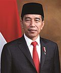

Image Gallery

Soekarno
Soekarno adalah Presiden RI yang Pertama
Soeharto
Soeharto adalah presiden RI yang kedua

Baharuddin Jusuf Habibie
BJ Habibie adalah presiden RI yang ketiga

Abdurrahman Wahid
KH. Abdurrahman Wahid (Gus Dur) adalah presiden RI yang keempat

Megawati Soekarnoputri
Megawati Soekarnoputri adalah presiden RI yang kelima

Susilo Bambang Yudhoyono
Susilo Bambang Yudhoyono (SBY) adalah presiden RI yang keenam

Joko Widodo
Joko Widodo adalah presiden RI yang ketujuh